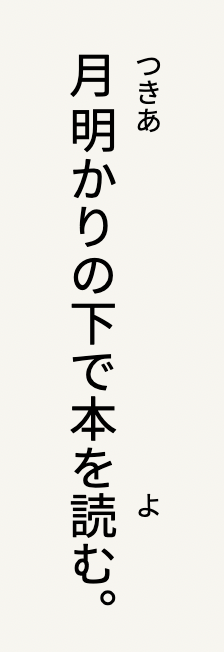
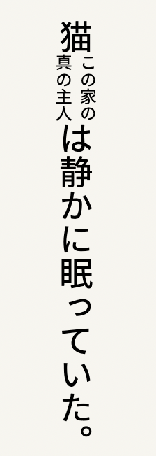
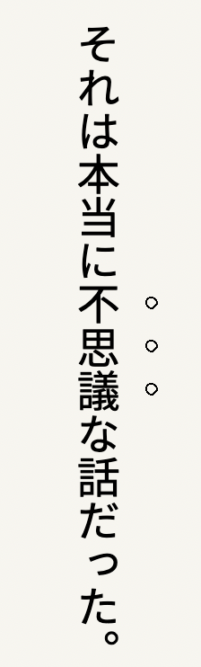
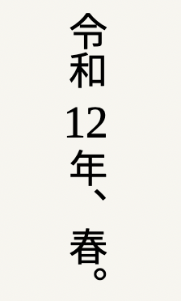
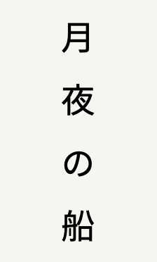
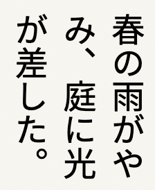
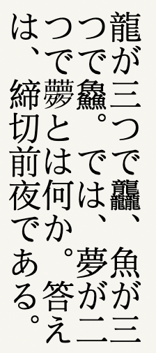

入力から組版まで、日本語の文字環境。
marinaMojiは、LibreOffice Writerに専門的な日本語組版機能を届けます。ルビや割注、縦中横、字取りなど、書き物の現場で必要になる処理を扱います。
拡張機能は単独でも使えます。あわせて、日本語入力と歴史的な字形のための道具を備えたmarinaMojiの入力メソッドと組み合わせることもできます。
学術的・歴史的なテキストを含む、日本語の書き方の細やかな要求に応える環境を目指しています。
日本語組版
ルビ · Ruby
文字のそばに、読みを
ルビは、本文の文字を置き換えずに読みや注記を添える組版です。縦書きでは親文字のそばに、横書きでは上に置くのが通例です。
読みの明示、なじみの薄い読みの提示、文字と解釈の両方を残したい場合に用います。親文字は通常のテキストとして編集・検索できます。
使い方
親文字を選んでルビを適用し、ダイアログに読みを入力します。ルビを解除は選択、またはルビ内にカーソルを置いて実行できます。結果はWriter本体のルビ書式です。

日本語組版
割注 · Warichū
本文のなかの注
割注は、本文に静かな第二の声を与えます。短い注が本行のなかに二行の小さな組として現れ、本文を離れずに説明を差し挟むことができます。
脚注と違い、注は読者がその語に出会うまさにその場所に残ります。簡潔な補足、日付、書誌的な情報、編集上の所見などに適し、日本語の学術・文芸組版に長い伝統があります。
使い方
段落全体ではなく注の文字列だけを選び、割注を適用します。通常の文字に戻すには、注を選ぶか注内にカーソルを置いて割注を解除します。Writerが注を周囲の本文のなかで二行の小さな組として配置します。

日本語組版
圏点 · 傍点
視線を集めるしるし
日本語組版では、強調のために文字の形や太さを変える必要はありません。文字のそばに小さなしるしを置くことで、文字そのものには手を触れずに視線を集めることができます。
圏点・傍点と呼ばれるこれらのしるしには、ゴマ、点、丸などがあります。とくに縦書きとの相性がよく、太字や斜体とは異なる方法で、文字のまわりの空間を通じて強調を示します。
使い方
強調したい文字を選び、圏点を付けるで文書の既定スタイルを適用します。圏点を外すで選択部分のしるしを解除します。
黒ゴマ・黒丸・白丸・点など特定のしるしは圏点メニューから選べます。メニューでは、すでに付けた圏点を書き換えることなく文書の既定も変更できます。

日本語組版
縦中横 · Tate-chū-yoko
わずかな横の空間
縦書きのなかにも、横に並べた方が自然な短い列があります。数字がその典型です。縦中横は、周囲の縦組みを崩さず、そうした列だけを横に収めます。
一字ずつ縦に積むとぎこちなくなる短い表現を、縦のリズムのなかに収めるための技法です。
使い方
縦書きの段落で、短いラテン文字や数字（通常は2字。3〜4字は確認あり。長い選択や和文混在は拒否）を選び、縦中横を適用します。縦中横を解除は横組みの結合を外し、文字を段落本来の書字方向に戻します。

日本語組版
字取り · Jidori
字のための場所をつくる
字取りは、短い文字列を指定した全角字数分の幅に収める処理です。自然幅のままではなく、見出しやラベルなど、字のグリッドとの関係が大切な箇所で用います。
単なる字形の引き延ばしではありません。対象は文字列全体に与えられる空間で、広げでは字間を、詰めでは（横書きで）尺度幅をおおよそ調整します。
使い方
短い和文を選んで字取りを適用し、字数を入力します。広げは字間、詰めは横書きの尺度幅です（縦書きの詰めは拒否）。字取りを解除は、marinaMojiが自身の適用を識別できる場合に以前の書式へ戻します。結果は近似です。

日本語組版
日本語組版 · 禁則処理
行が終わってよいところ
日本語の改行は、空いた幅にできるだけ多くの文字を詰め込むことではありません。句読点などは、見た目にも文法的にも周囲の文字と結びついており、不適切な切れ目はその関係を乱します。
禁則処理は、行頭や行末に通常置くべきでない文字を扱う約束です。LibreOffice Writerはすでに日本語の禁則を実装しており、marinaMojiは関連する組版設定を示し、選ばれた潜在的な論点を指摘することでそれを補います。Writerのレイアウトエンジンを置き換えるものではありません。
使い方
日本語組版を点検を選び、現在の段落または選択の組版設定を確認します。報告はテキスト中の選ばれた潜在的な論点も示します。読み取り専用で、文書は変更しません。

Unicodeを超えて
Unicodeを超えて
欲しい字が、まだないとき
Unicodeの字種は膨大でも、歴史的・特殊な字形のすべてに適切な表現があるわけではありません。写本や古い版本、珍しい異体では、通常のテキストフォントにその形がなかったり、そもそも符号化されていなかったりすることがあります。
marinaMojiの入力メソッドは、字形を合成し、インラインのベクター画像として挿入する道具を備えています。通常のUnicode文字としては入力できない字形でも、本文の流れのなかに置くことができます。LibreOfficeの組版ツールはIMEなしでも動きますが、合成と挿入は、その広い環境の側にあります。
漢字は、古くから巧みな組み合わせを誘ってきました。龍を三つ重ねれば龘、魚を三つ重ねれば鱻。では、夢を二つ重ねたら——何になるでしょうか。
ベクター画像はUnicode文字ではありません。検索・コピー・アクセシビリティ・交換では、通常の文字と扱いが異なることがあります。
marinamoji.crcao.fr
